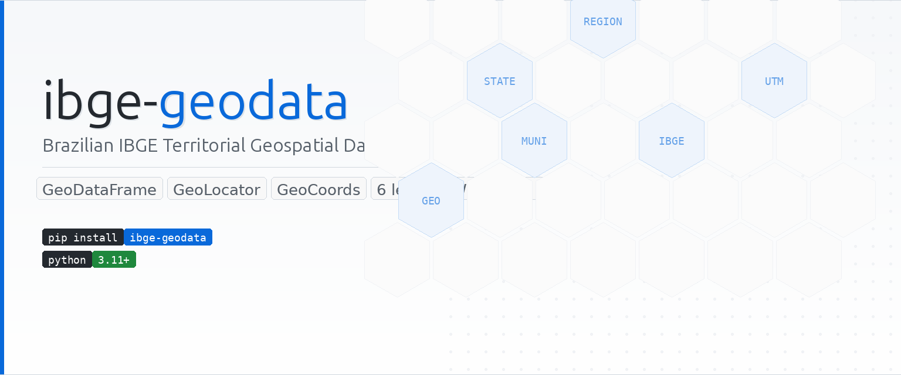

ibge-geodata¶


ibge-geodata is a Python package to access and manipulate Brazilian IBGE territorial geospatial data directly in DataFrames and GeoDataFrames.
What you can do¶
- Territorial polygons
Download geometries for countries, regions, states, municipalities, and intermediate/immediate regions.
- Aligned metadata
IBGE localities API metadata automatically joined to geometries by id.
- Point localisation
Find the state, municipality, and region that contain any geographic point.
- Quick visualisation
Generate maps in one line with geodata.plot().
Quick install¶
Minimal example¶
from geodata import GeoData, GeoLevel, Quality, GeoLocator
from geodata.utils.geocoords import GeoCoords
# Polygons and metadata for all states
states = GeoData(GeoLevel.STATE, Quality.LOW)
states.plot()
# Locate a point
brasilia = GeoCoords(lat=-15.7801, lon=-47.9292)
loc = GeoLocator(brasilia)
print(loc.state) # 'DF'
print(loc.municipality) # 'Brasília'
Navigation¶
| Page | Description |
|---|---|
| Installation | Requirements and setup instructions |
| Quickstart | Practical guide with annotated examples |
| API Reference | Full documentation for all classes |
| Examples | Real-world use cases |
| FAQ | Frequently asked questions |
| Contributing | How to contribute to the project |
API Reference¶
| Class | Description |
|---|---|
GeoData |
Downloads territorial polygons and metadata for a given level and quality |
GeoLocator |
Finds the administrative divisions that contain a geographic point |
GeoCoords |
Validated WGS-84 coordinate pair with geodesic utilities |
GeoLevel |
Enum of available geographic levels (country, state, municipality…) |
Quality |
Enum controlling polygon resolution (low, medium, high) |